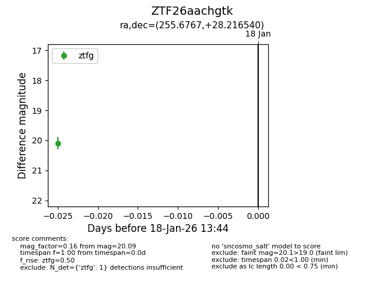
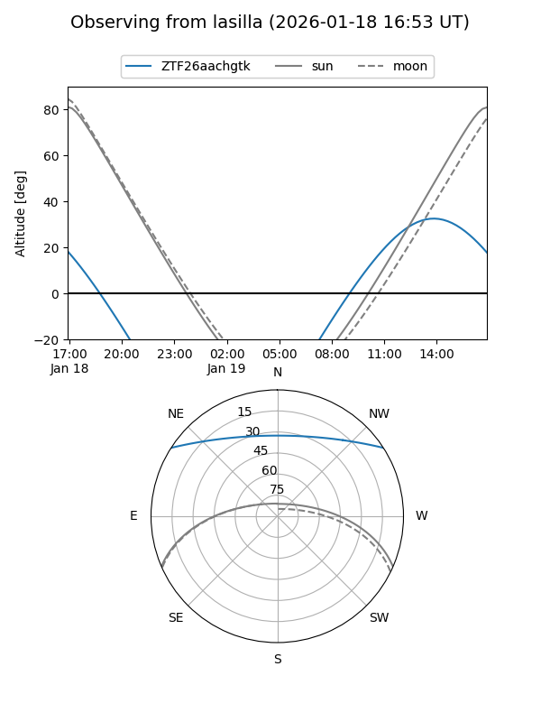
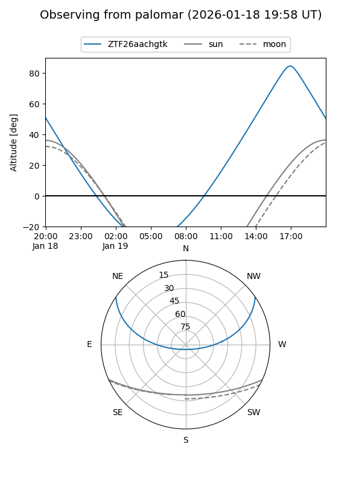

ZTF26aachgtk
Target ZTF26aachgtk at 2026-01-18 21:16
Aliases and brokers:
FINK: link
Lasair: link
ALeRCE: link
alt names
ZTF26aachgtk (ztf,fink_ztf)
Coordinates:
equatorial (ra, dec) = 255.6767,+28.21654
equatorial (HMS+DMS) = 17:02:42.40,+28:12:59.54
galactic (l, b) = (49.7708,+35.01922)
Flags:
Photometry:
last ztfg=20.09
1 ztfg detections
Lightcurve

Visibility


Additional plots